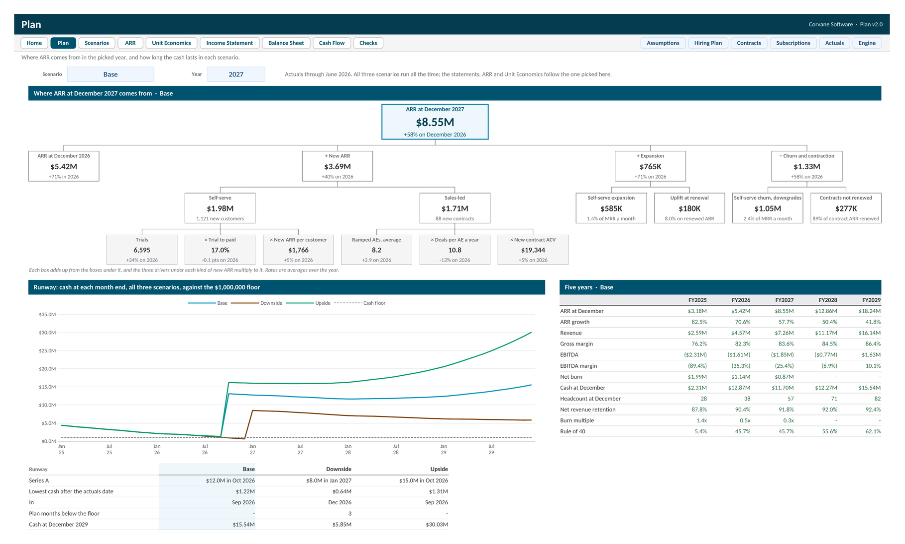

3 Statement SaaS Financial Model
A fifteen tab Excel workbook, with a Google Sheets version, that plans a SaaS company month by month from its own books to December 2029. Self serve and sales led ARR come from their drivers, the income statement, balance sheet, and cash flow are linked and balance every month, and Base, Downside, and Upside run side by side. A driver tree shows where each year's ARR comes from, and 21 built in checks sit underneath.

The sample is Corvane Software, a fictional company that sells scheduling and invoicing software to HVAC and plumbing contractors two ways: self serve Starter and Pro plans paid monthly by card, and sales led Fleet contracts billed a year upfront. Eighteen months of actuals, January 2025 to June 2026, come from the books, the billing system's subscription movements, and 189 contract terms. The plan runs month by month to December 2029 from the balances at the actuals date, and moving that date back makes it pick up from an earlier month end.
The Plan draws ARR at the end of the picked year as a tree: ARR a year earlier, plus new self serve and sales led ARR and expansion, less churn and downgrades, down to the drivers. Trials times trial to paid times new ARR per customer gives new self serve ARR, and ramped account executives times deals per AE times contract value gives new sales led ARR. Beside it, cash at every month end in all three scenarios against the cash floor, with the Series A as the step up, a runway table, and a five year summary.
New contracts come from the account executives on the hiring plan once they ramp. Contracts renew every 12 months at a renewal rate with a price uplift, so churn happens at renewal and annual billing builds deferred revenue. Payroll with January raises, hosting per customer, card fees, commissions, capital spending, a term loan, interest on cash, and tax with losses carried forward complete the three statements, and NRR and GRR come from the cohorts.
Base, Downside, and Upside run at once, so Scenarios shows them side by side and the one picked on the Plan feeds the statements, ARR, and Unit Economics. A Checks tab runs 21 tests, from the balance sheet in every month of every run to the books against the subscription and contract data, and data warnings on every row. Corvane Software is fictional and every figure is illustrative.